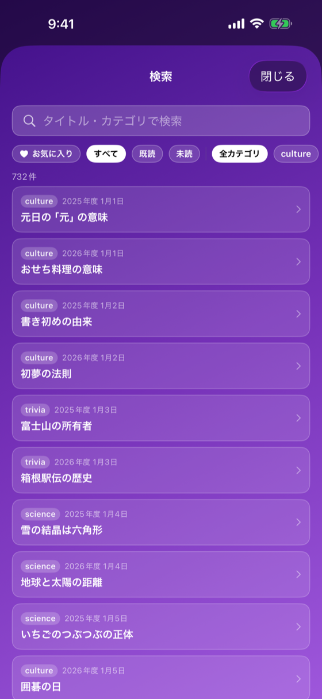

過去の豆知識をキーワード・カテゴリ・お気に入り・既読/未読で絞り込む

v1.0.5 で新規追加。daily_tips.json 内 732件の豆知識への導線。過去に読んだ／興味のあるトピックの再発見と再学習を促す。
| 条件 | 表示 |
|---|---|
| プレミアム会員 or 当日 or ログイン済み or 広告視聴済み | 通常の TipCardView |
| ロック対象 | 🔒 ロック表示 + 「動画を見て解放する」ボタン + 「広告の動画が流れます。プレミアムプランなら全日付をいつでも閲覧できます。」 |
| 動画を再生できなかった（1.0.13） | アラート「動画を再生できませんでした」（通信状況を確かめて時間をおいて再試行を案内） |
ロック解放ボタンタップで RewardedAdManager.show → 視聴完了で HistoryService.markAsAdViewed → 通常表示に切り替わる。
cachedFavorites(Set<String>) と allCategories を初期化| バージョン | 日付 | 変更内容 |
|---|---|---|
| 1.0 | 2026-05-17 | 初版作成（v1.0.5 新規画面） |
| 1.1 | 2026-10-21 | アプリ 1.0.13（未公開・2026-10-21）: 検索対象に本文と日本語のカテゴリ名を追加、カテゴリのチップ・バッジを日本語に、ロック日のボタンを「動画を見て解放する」に、動画の再生失敗時のアラートを追加（DT-013・DT-010） |